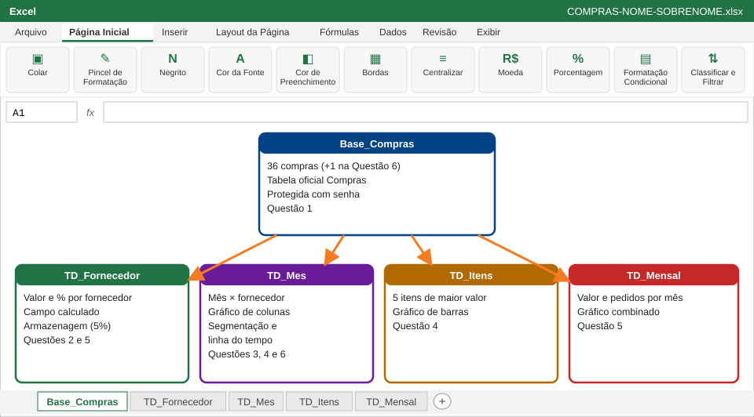

Tabelas dinâmicas, gráficos dinâmicos, segmentação de dados e proteção: qual fornecedor e qual mês concentram as compras?
O gerente de compras da Metalúrgica Vale do Itajaí (empresa fictícia) recebeu da diretoria duas perguntas sobre o 1º semestre de 2026: de qual fornecedor a empresa mais comprou? e em que mês as compras se concentraram?
Você vai responder com a base das 36 compras do semestre, usando tabelas dinâmicas para resumir, gráficos dinâmicos para mostrar e segmentação para deixar o relatório interativo.
No final, o arquivo terá estas abas, todas alimentadas pela base:

| Momento | O que fazer | Tempo | Pontos |
|---|---|---|---|
| Abertura | Ler esta capa, baixar a base e abrir o Excel | 15 min | — |
| Questão 1 | Preparar a base de compras | 20 min | 1,5 |
| Questão 2 | Tabela dinâmica por fornecedor | 30 min | 2,0 |
| Questão 3 | Agrupar por mês e trimestre, contar pedidos e filtrar | 25 min | 1,5 |
| Intervalo | — | 15 min | — |
| Questão 4 | Gráficos dinâmicos de colunas e barras | 35 min | 2,0 |
| Questão 5 | Campo calculado e gráfico combinado | 25 min | 1,5 |
| Questão 6 | Segmentação, linha do tempo, atualização e proteção | 30 min | 1,5 |
| Fechamento | Revisar e entregar o arquivo | 10 min | — |
| Total | 3h25 | 10,0 |
Valor na nota final: 10 pontos. O desempenho esperado é de 7,0 ou mais (70%, a mesma média da tabela de notas).
⬇️ Baixar BASE-COMPRAS-1S-2026.xlsx
Baixe a base com as 36 compras do 1º semestre, abra no Excel e siga a Questão 1. A base tem dois problemas de propósito, que você vai corrigir.
Colunas da planilha: A, B, C, D, E, F, G.
| Data | Nº Pedido | Fornecedor | Categoria | Item | Quantidade | Valor Unitário |
|---|---|---|---|---|---|---|
| 05/01/2026 | P-001 | Alfa Suprimentos | EPI | Luva de vaqueta | 40 | 18,90 |
| 09/01/2026 | P-002 | Beta Industrial | Fixação | Parafuso sextavado M8 | 2000 | 0,45 |
| 14/01/2026 | P-003 | Beta Industrial | Elétrico | Cabo flexível 2,5 mm² | 200 | 3,40 |
| 20/01/2026 | P-004 | Cometa EPI | EPI | Máscara PFF2 | 150 | 3,20 |
| 23/01/2026 | P-005 | Delta Ferramentas | Ferramentas | Disco de corte 7" | 40 | 9,80 |
| 28/01/2026 | P-006 | Beta Industrial | Elétrico | Disjuntor 20 A | 20 | 24,90 |
| 03/02/2026 | P-007 | Beta Industrial | Fixação | Porca M8 | 2000 | 0,15 |
| 06/02/2026 | P-008 | Alfa Suprimentos | EPI | Óculos de proteção | 30 | 12,50 |
| 11/02/2026 | P-009 | Beta Industrial | Elétrico | Fita isolante 19 mm | 30 | 6,90 |
| 17/02/2026 | P-010 | Delta Ferramentas | Ferramentas | Broca aço rápido 8 mm | 20 | 14,50 |
| 20/02/2026 | P-011 | Cometa EPI | EPI | Protetor auricular plug | 300 | 1,80 |
| 25/02/2026 | P-012 | Beta Industrial | Elétrico | Cabo flexível 2,5 mm² | 150 | 3,40 |
| 02/03/2026 | P-013 | Beta Industrial | Elétrico | Disjuntor 20 A | 60 | 24,90 |
| 05/03/2026 | P-014 | Alfa Suprimentos | EPI | Luva de vaqueta | 60 | 18,90 |
| 10/03/2026 | P-015 | Beta Industrial | Elétrico | Cabo flexível 2,5 mm² | 400 | 3,40 |
| 13/03/2026 | P-016 | Delta Ferramentas | Ferramentas | Trena 5 m | 15 | 22,00 |
| 18/03/2026 | P-017 | Beta Industrial | Fixação | Parafuso sextavado M8 | 3000 | 0,45 |
| 24/03/2026 | P-018 | Cometa EPI | EPI | Máscara PFF2 | 200 | 3,20 |
| 02/04/2026 | P-019 | Delta Ferramentas | Ferramentas | Disco de corte 7" | 30 | 9,80 |
| 07/04/2026 | P-020 | Alfa Suprimentos | EPI | Luva de vaqueta | 30 | 18,90 |
| 10/04/2026 | P-021 | Beta Industrial | Fixação | Porca M8 | 1500 | 0,15 |
| 15/04/2026 | P-022 | Beta Industrial | Elétrico | Fita isolante 19 mm | 25 | 6,90 |
| 22/04/2026 | P-023 | Alfa Suprimentos | EPI | Óculos de proteção | 20 | 12,50 |
| 28/04/2026 | P-024 | Beta Industrial | Elétrico | Cabo flexível 2,5 mm² | 120 | 3,40 |
| 04/05/2026 | P-025 | Beta Industrial | Elétrico | Disjuntor 20 A | 25 | 24,90 |
| 08/05/2026 | P-026 | Cometa EPI | EPI | Protetor auricular plug | 250 | 1,80 |
| 12/05/2026 | P-027 | Delta Ferramentas | Ferramentas | Broca aço rápido 8 mm | 15 | 14,50 |
| 19/05/2026 | P-028 | Alfa Suprimentos | EPI | Luva de vaqueta | 40 | 18,90 |
| 22/05/2026 | P-029 | Beta Industrial | Fixação | Parafuso sextavado M8 | 1500 | 0,45 |
| 27/05/2026 | P-030 | Cometa EPI | EPI | Máscara PFF2 | 120 | 3,20 |
| 02/06/2026 | P-031 | Beta Industrial | Elétrico | Cabo flexível 2,5 mm² | 180 | 3,40 |
| 05/06/2026 | P-032 | Delta Ferramentas | Ferramentas | Trena 5 m | 10 | 22,00 |
| 10/06/2026 | P-033 | Delta Ferramentas | Ferramentas | Disco de corte 7" | 35 | 9,80 |
| 16/06/2026 | P-034 | Alfa Suprimentos | EPI | Luva de vaqueta | 35 | 18,90 |
| 19/06/2026 | P-035 | Beta Industrial | Elétrico | Fita isolante 19 mm | 20 | 6,90 |
| 25/06/2026 | P-036 | Beta Industrial | Elétrico | Disjuntor 20 A | 15 | 24,90 |